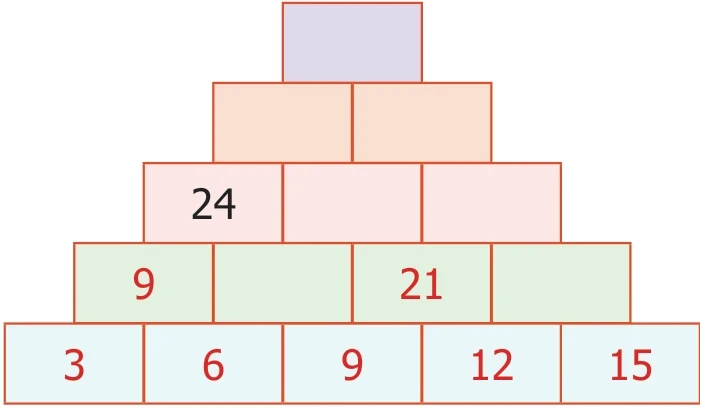
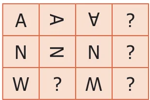
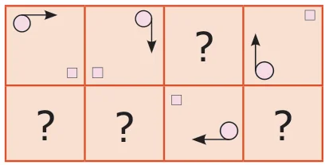
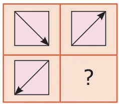
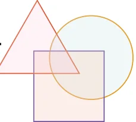

- Study and complete the following pattern
\(1 \times 1 = 1\)
\(11 \times 11 = 121\)
\(111 \times 111 = 12321\)
\(1111 \times 1111 = ?\)
\(11111 \times 11111 = ?\)

(Hint: \(3 + 6 = 9\), \(9 + 12 = 21\))
- Find next three numbers in the following number patterns.
- 50, 51, 53, 56, 60, …
- 77, 69, 61, 53, …
- 10, 20, 40, 80, …
- \(\frac{21}{33}, \frac{321}{444}, \frac{4321}{5555}, \ldots\)
- Consider the Fibonacci sequence 1, 1, 2, 3, 5, 8, 13, 21, 34, 55,… Observe and complete the following table by understanding the number pattern followed. After filling the table discuss the pattern followed in addition and subtraction of the numbers of the sequence.
Steps Pattern 1 Pattern 2 i) \(1+3 = 4\) \(5 - 1 = 4\) ii) \(1+3+8 =\) __________ ? iii) \(1+3+8+21 =\) __________ ? iv) ? ? - Complete the following patterns.



- Find HCF of the following pair of numbers by Euclid's game.
- 25 and 35
- 36 and 12
- 15 and 29
- Find HCF of 48 and 28. Also find the HCF of 48 and the number obtained by finding their difference.
- Give instructions to fill in a bank withdrawal form issued in a bank.
- Arrange the name of your classmates alphabetically.
- Follow and execute the instructions given below.

- Write the number 10 in the place common to the three figures
- Write the number 5 in the place common for square and circle only.
- Write the number 7 in the place common for triangle and circle only.
- Write the number 2 in the place common for triangle and square only.
- Write the numbers 12, 14 and 8 only in square, circle and triangle respectively.
- Fill in the following information.
![Form: Candidate's EMIS No; 1. Name of the candidate in Capital Letters followed by initial leaving one box blank. (Do not write Miss/Master); 2. Class, Date of birth (Date, Month, Year); 3. Father's name in Capital Letters followed by initial leaving one box blank. (Do not write Mr./Dr./Prof); 4. Mother's Name in Capital Letters followed by initial leaving one box blank. (Do not write Mrs./Dr./Prof); 5. Sex (Put tick mark) Male, Female; 6. Area to which candidates resides. (Put tick mark) Rural, Urban](img/fig-fix-p11-1.webp)
Objective Type Questions
- The next term in the sequence 15, 17, 20, 22, 25,... is
- 28
- 29
- 27
- 26
- What will be the 25th letter in the pattern? ABCAABBCCAAABBBCCC,...
- B
- C
- D
- A
- The difference between 6th term and 5th term in the Fibonacci sequence is
- 6
- 8
- 5
- 3
- The 11th term in the Lucas sequence 1, 3, 4, 7, ... is
- 199
- 76
- 123
- 47
- If the HCF of 26 and 54 is 2, then HCF of 54 and 28 is...
- 26
- 2
- 54
- 1